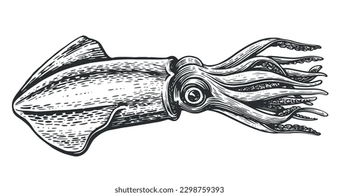
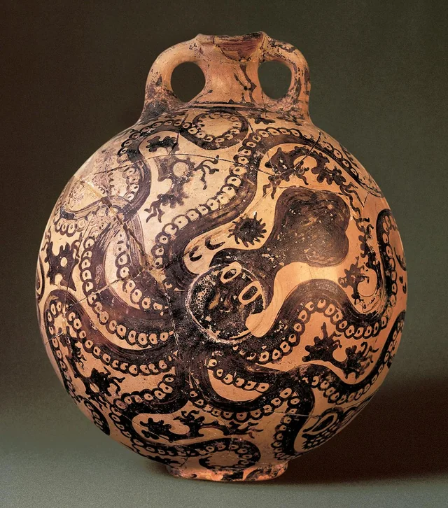
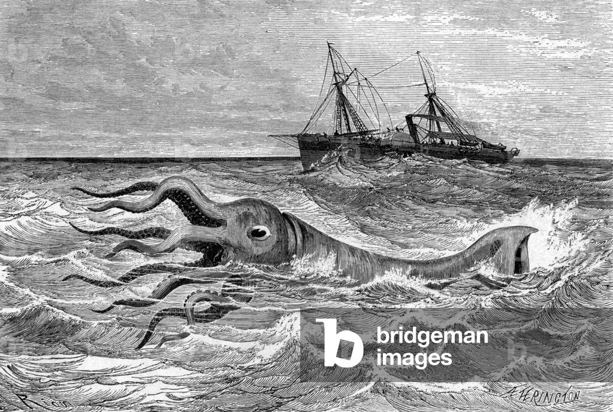
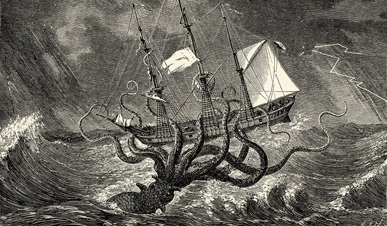
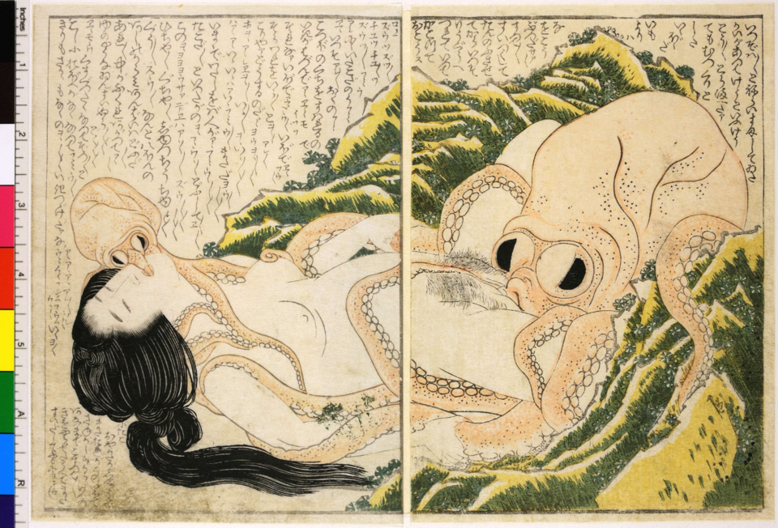
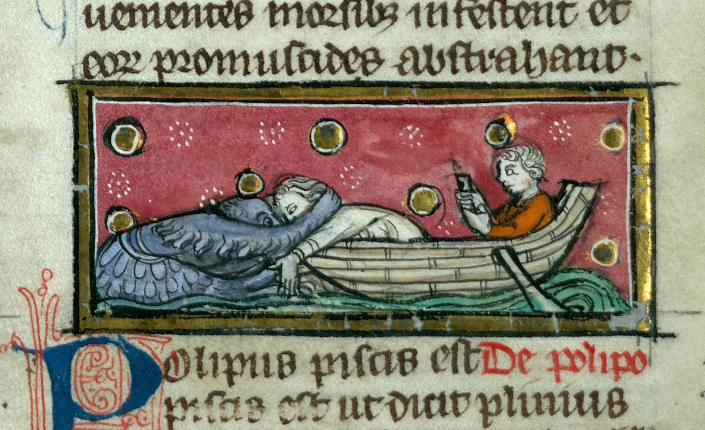
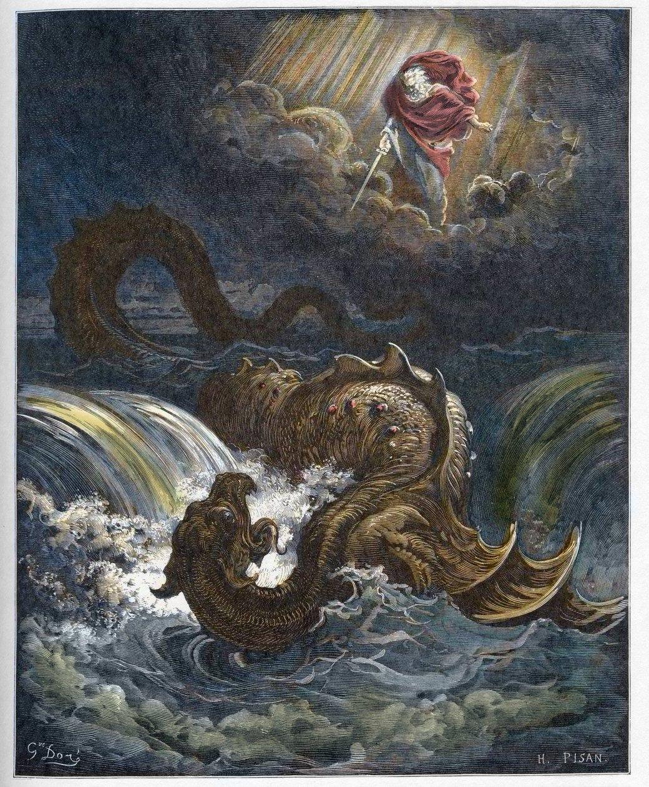
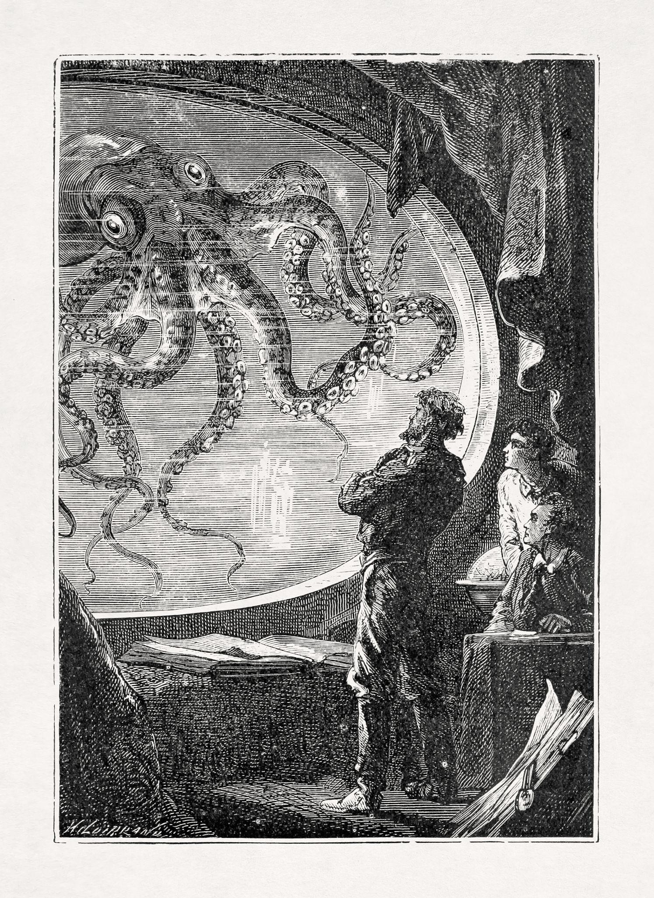
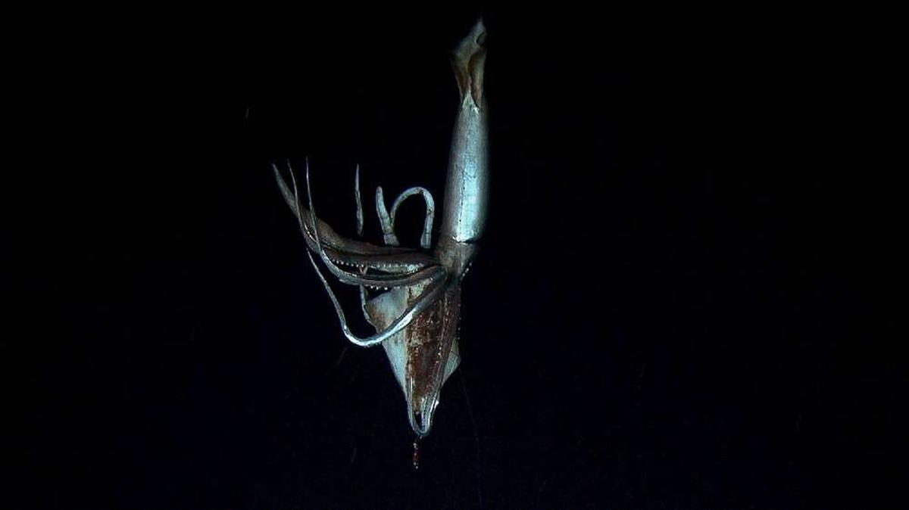

Partie I
Présentation de l'animal
Étymologie · Premières représentations · Interprétations fondatrices
Question a — Étymologie
L'origine du mot « Calamar »

Le mot « calamar » provient du latin médiéval calamarium, dérivé de calamus — « roseau, plume à écrire ». La métaphore est immédiate : la poche à encre du céphalopode évoquait l'encrier du scribe, et son gladius (os interne transparent) rappelait la plume de roseau. L'animal portait ainsi en son nom même son premier usage utilitaire pour l'homme.
En grec ancien, le calamar se nommait teuthis (τευθίς), racine qui a donné le nom scientifique de l'ordre Teuthida. Cette racine se retrouve en italien (totano), en espagnol (calamar), et dans toutes les langues méditerranéennes. Le latin loligo, autre nom antique, a donné Loligo vulgaris, nom scientifique du calamar commun.
Question b — Premiers textes et représentations
Les premières traces : époque, civilisation, interprétation

Les premières représentations de céphalopodes remontent à la civilisation minoenne (Crète, ~1500 av. J.-C.). Des céramiques dites « de style marin » montrent des pieuvres et calamars aux tentacules stylisés sur des vases rituels. Pour les Minoens, peuple insulaire vivant de la pêche, la créature symbolise la puissance féconde et mystérieuse de la mer : un signe positif, protecteur.

Aristote (~350 av. J.-C., Grèce) est le premier naturaliste à décrire scientifiquement le calamar dans son Histoire des animaux (Livre IV). Il distingue la seiche, la pieuvre et le calamar, décrit son mode de nage et son jet d'encre. Pour lui, la créature suscite l'admiration (intelligence, complexité) mais aussi une méfiance : son encre qui obscurcit l'eau est déjà perçue comme une forme de tromperie.
Pline l'Ancien (Rome, Ier siècle ap. J.-C.) rapporte dans son Historia Naturalis des récits de calamars géants attaquant des pêcheurs. La créature, jusqu'ici symbole de la mer nourricière, acquiert progressivement une dimension de danger et de peur : elle représente l'inconnu des profondeurs, là où l'homme ne peut pas aller.
Partie II
L'animal dans les contes & légendes du monde entier
Deux récits · Résumé en 5W · Deux aspects différents · Explications culturelles
Le calamar a nourri deux grandes familles de récits à travers le monde : l'une le présentant comme un monstre destructeur, l'autre comme une figure bienveillante ou sacrée. Ces visions opposées révèlent le rapport qu'entretient chaque civilisation avec la mer.
Récit 1 — Aspect menaçant / terreur
Le Kraken — Mythologie nordique (Islande & Norvège, XIIe siècle)

Le Kraken, monstre marin colossal inspiré du calamar géant
Il surgit des abysses, ses tentacules géantes encerclent et coulent les navires
Mers du Nord, côtes islandaises et norvégiennes
Premiers récits écrits vers 1180 dans le Konungs skuggsjá
Il monte des profondeurs, encercle les bateaux, plonge en créant un tourbillon fatal
Le Kraken incarne l'aspect terreur et puissance destructrice : la mer est un ennemi imprévisible qui peut engloutir l'homme. Ce récit reflète l'expérience des pêcheurs nordiques confrontés aux tempêtes et à l'immensité hostile de l'Atlantique Nord. Des spécimens d'Architeuthis dux pouvant dépasser 13 mètres ont réellement été observés échoués, alimentant directement la mythologie.
Récit 2 — Aspect sacré / familier
L'Ika (烏賊) — Tradition shinto et culture japonaise

L'ika (calamar), figure divine et nourricière dans le shinto
Messager des dieux de la mer, offrande rituelle dans les sanctuaires
Japon, côtes du Pacifique et de la mer du Japon
Traditions shinto depuis l'Antiquité, représentations dès le XVIe siècle
Offrandes de calamars séchés dans les sanctuaires ; fêtes de la mer mettant l'animal à l'honneur
Dans la culture japonaise, le calamar est une figure nourricière, familière et quasi sacrée. Contrairement à l'Europe du Nord, la mer est perçue comme une mère généreuse. L'ika est central dans la cuisine, l'art et le shinto.
"Là où les Vikings voyaient dans le calamar un monstre engloutisseur de navires, les Japonais y voyaient un messager des dieux et le don quotidien de la mer."
Explication culturelle : Ces deux visions opposées s'expliquent par le rapport de chaque société à la mer. Les peuples nordiques affrontent des mers dangereuses avec des embarcations précaires : ils y projettent leurs angoisses. Les Japonais, île-nation dont la survie dépend de la pêche depuis des millénaires, ont intégré la mer — et ses créatures — comme une force bienveillante à respecter, non à craindre.
Partie III
L'animal au Moyen Âge
Bestiaires · Continuité ou rupture · Lecture chrétienne
Question a — Dans le bestiaire médiéval
Le calamar comme symbole moral

Dans les bestiaires médiévaux — encyclopédies illustrées mêlant description naturelle et allégorie morale — le calamar est assimilé au Léviathan, le monstre marin des Écritures (Job 41), figure du chaos et du diable.

L'exemple précis le plus parlant est le Manuscrit d'Aberdeen (~1200, Écosse), qui décrit le polypus (céphalopode) comme une créature capable de changer de couleur pour piéger ses proies. Le clerc y lit une métaphore du diable trompeur : comme l'animal qui prend la couleur de son environnement pour duper ses victimes, Satan prend l'apparence du bien pour piéger les âmes. Le jet d'encre obscurcissant les eaux devient l'image du péché obscurcissant la raison.
Question b — Continuité ou rupture ?
Par rapport à la Préhistoire, l'Antiquité et l'avant-écriture
Il y a à la fois continuité et transformation profonde. En Préhistoire et dans l'Antiquité grecque, le calamar suscitait la peur (monstre marin) mais aussi l'émerveillement : les Minoens en faisaient un symbole positif, Aristote l'étudiait avec curiosité scientifique, sans jugement moral.
Au Moyen Âge, la représentation se charge d'une dimension morale absente auparavant : la créature n'est plus simplement dangereuse ou mystérieuse — elle devient porteuse d'un sens allégorique chrétien. Son comportement naturel est lu comme symbole du mal.
La rupture principale : avant le Moyen Âge, le calamar est observé pour ce qu'il est. Après, il est relu à travers le prisme de la foi chrétienne, qui impose un sens moral à chaque créature naturelle.
Question c — La religion chrétienne comme explication
Lire la nature comme un livre moral
Cette interprétation s'explique par la domination de la pensée chrétienne au Moyen Âge. Dans la Bible, la mer est un espace de chaos et d'obscurité, peuplé de monstres opposés à l'ordre divin. Le Léviathan est l'archétype de la bête des profondeurs associée au diable.
Dans ce cadre interprétatif, tout animal au comportement mystérieux ou trompeur — comme le calamar qui disparaît dans un nuage d'encre ou change de couleur — est naturellement associé aux forces du mal. La scolastique médiévale conçoit le monde naturel non comme un objet d'étude, mais comme un livre de signes moraux que Dieu a déposé pour guider l'humanité.
"Le calamar qui obscurcit les eaux de son encre est, pour le clerc médiéval, l'image de l'hérétique qui corrompt les âmes simples par ses discours trompeurs."
Partie IV
L'animal aujourd'hui
Regard contemporain · Deux œuvres · Exceptions mondiales
Question a — Regard actuel + œuvres (picturales, ciné, littéraires)
Du monstre à la mascotte : deux œuvres de référence
Aujourd'hui, le calamar oscille entre fascination scientifique (premier film d'un calamar géant vivant en 2006), ressource alimentaire mondiale (4 millions de tonnes pêchées par an) et figure culturelle pop. Le regard contemporain a largement dépassé la vision démoniaque médiévale.


Œuvre 1 — Jules Verne, Vingt mille lieues sous les mers (1870, France, Littérature) : Verne réinvente la terreur du Kraken nordique à travers le prisme de la science moderne. Le monstre est réel, mesurable, observable — mais toujours menaçant. Cette œuvre fonde la représentation du calamar géant dans la littérature et le cinéma populaires du XXe siècle (de King Kong à Pirates des Caraïbes en passant par Cloverfield).
Œuvre 2 — Nintendo, Splatoon (2015, Japon, Jeu vidéo) : Les héros sont des adolescents mi-humains mi-calamars capables de se transformer en encre colorée. Le calamar y est une figure attachante, ludique et "cool", vendue à plus de 13 millions d'exemplaires dans le monde. Cette réappropriation japonaise prolonge la tradition de familiarité nippone avec la créature, adaptée à la culture pop du XXIe siècle.
Question b — Exceptions dans le monde
Des regards encore très différents selon les cultures
Malgré la mondialisation, des exceptions notables persistent. Dans de nombreuses communautés religieuses juives et islamiques, les céphalopodes restent des animaux impurs ou proscrits (non écailleux), totalement absents de la culture symbolique et alimentaire.
Dans certaines cultures d'Afrique subsaharienne continentale, le calamar est simplement inconnu — là où la mer n'est pas un horizon culturel, la créature n'existe pas dans l'imaginaire collectif.
À l'inverse, dans les cultures méditerranéennes (Espagne, Italie, Grèce, Portugal) et est-asiatiques (Japon, Corée), le calamar est omniprésent et aimé : calamars frits, encre de seiche dans les pâtes, tentacules grillés.
Explication : Ces différences s'expliquent par trois facteurs — la géographie (pays côtiers vs continentaux), la religion (lois alimentaires), et l'histoire économique (les peuples dont la survie a dépendu de la pêche ont développé un attachement culturel fort à ses créatures).